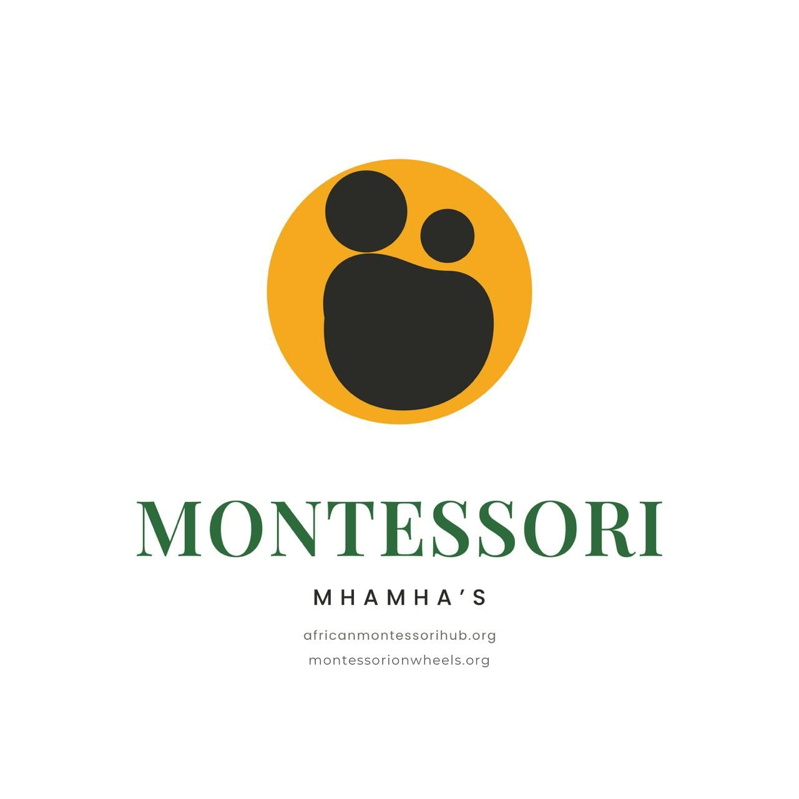

See the child anew
Understand development beneath behaviour. Notice readiness, curiosity and the emerging wish to “do it myself”.
Montessori on Wheels · Community & caregiving
Small moments. Lifelong roots.
The wisdom you carry. The potential they hold. A community of caregivers bringing African traditions and Montessori together, one everyday moment at a time.

Rooted in culture. Growing together.6 weeksOne session each week
2–3 hoursLearn, share & practise
Every caregiverNo Montessori experience needed
A familiar wisdom. A fresh perspective.
Across Zimbabwe, mothers, grandmothers and extended families carry generations of knowledge about raising children. Montessori MhaMha’s honours that wisdom and brings it into conversation with Montessori’s understanding of how children grow.
Developed by Montessori on Wheels, this community parenting and caregiver program helps you support learning at home with everyday materials, cultural practices and thoughtful observation. It is about discovering those “Aha!” moments: you already have so much to offer your child.
Mothers, fathers, grandparents, guardians and all adults raising children are welcome. Motherhood is the starting point; caregiving is the shared practice.
Everyday life, extraordinary possibilities
Understand development beneath behaviour. Notice readiness, curiosity and the emerging wish to “do it myself”.
Create opportunities for independence with affordable, locally available materials. A reachable cup or a small task can communicate trust.
Build joyful relationships through respectful limits, shared work, songs and stories. Independence grows alongside belonging.
The program experience
Six weekly sessions combine demonstrations, discussion and activities to try at home. Bring your questions, your experience and a willingness to learn with others.
Explore Practical Life, Sensorial learning, Language, Math, and Grace & Courtesy, adapted for the home.
Discover Montessori principles through practical activities you can use in everyday family life.
Share Shona and Ndebele child-rearing wisdom, songs, proverbs and games across generations.
Explore affordable Montessori-inspired materials designed for learning at home.
Keep learning with guidance, home visits and check-ins that support your practice.
Why mothers? Why Montessori?
It is the world into which a child is welcomed.
Caregiving brings intimacy, culture and lived experience. Montessori brings observation, developmental understanding and ways to prepare an environment where a child can participate.
Together, they invite us to preserve what nurtures children, thoughtfully reconsider inherited practices, and recognise that a capable child is also a connected child.
Take the learning home
Explore the thinking behind the program: why the knowledge of mothers matters, how Montessori deepens our understanding, and what intentional caregiving can look like at home.
What you take with you
Caregivers the program aims to train over two years, strengthening intergenerational bonds and building a model that can grow across Zimbabwe and beyond.
Our community in moments
People to learn alongside

A Montessori advocate exploring how Montessori principles connect with Zimbabwe’s rich cultural traditions and the wider African context.

A Montessori-trained guide with teaching experience in China and Zimbabwe, and a mother bringing the daily practice of raising her two children the Montessori way into every session.
Led by African Montessori Hub with local community centres, churches and schools. Montessori on Wheels provides Montessori expertise, training resources and support for community-based delivery.
Your next chapter starts at home
$60 for the full six-week program
Commit to six sessions, try activities at home, and share your reflections. No prior teaching or Montessori experience is required.
Ask about the next program31 Ashburton Road, Chadcombe, Harare
admin@amhhq.org